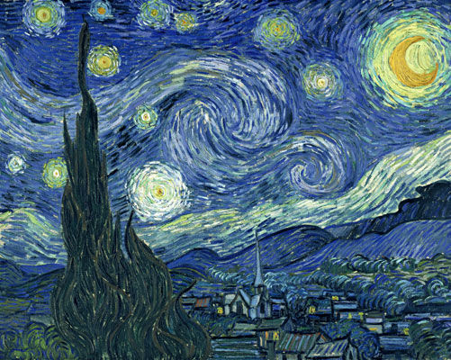
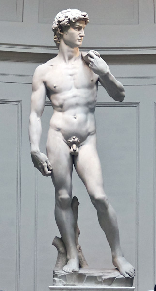
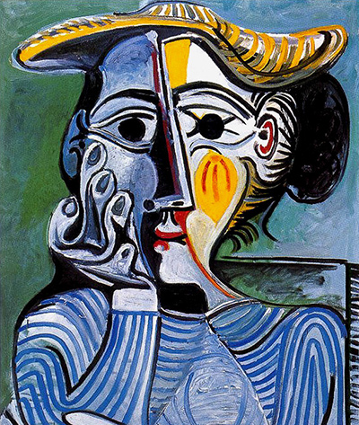

Click the buttons below to learn more about some of the world's finest painters and sculptors! (Click again to hide)

Vincent Willem van Gogh (30 March 1853 – 29 July 1890) was a Dutch Post-Impressionist painter who is among the most famous and influential figures in the history of Western art. In just over a decade he created about 2,100 artworks, including around 860 oil paintings, most of them in the last two years of his life. They include landscapes, still lifes, portraits and self-portraits, and are characterised by bold colours and dramatic, impulsive and expressive brushwork that contributed to the foundations of modern art. His suicide at 37 followed years of mental illness and poverty.

Michelangelo di Lodovico Buonarroti Simoni (6 March 1475 – 18 February 1564) was an Italian sculptor, painter, architect, and poet of the High Renaissance born in the Republic of Florence, who exerted an unparalleled influence on the development of Western art. Considered to be the greatest living artist during his lifetime, he has since been described as one of the greatest artists of all time. Despite making few forays beyond the arts, his versatility in the disciplines he took up was of such a high order that he is often considered a contender for the title of the archetypal Renaissance man, along with his rival and fellow Florentine Medici client, Leonardo da Vinci.
A number of Michelangelo's works of painting, sculpture, and architecture rank among the most famous in existence. His output in every field of interest was prodigious; given the sheer volume of surviving correspondence, sketches, and reminiscences taken into account, he is the best-documented artist of the 16th century.

Pablo Picasso (25 October 1881 – 8 April 1973) was a Spanish painter, sculptor, printmaker, ceramicist, stage designer, poet and playwright who spent most of his adult life in France. Regarded as one of the most influential artists of the 20th century, he is known for co-founding the Cubist movement, the invention of constructed sculpture, the co-invention of collage, and for the wide variety of styles that he helped develop and explore. Among his most famous works are the proto-Cubist Les Demoiselles d'Avignon (1907), and Guernica (1937), a dramatic portrayal of the bombing of Guernica by the German and Italian airforces.